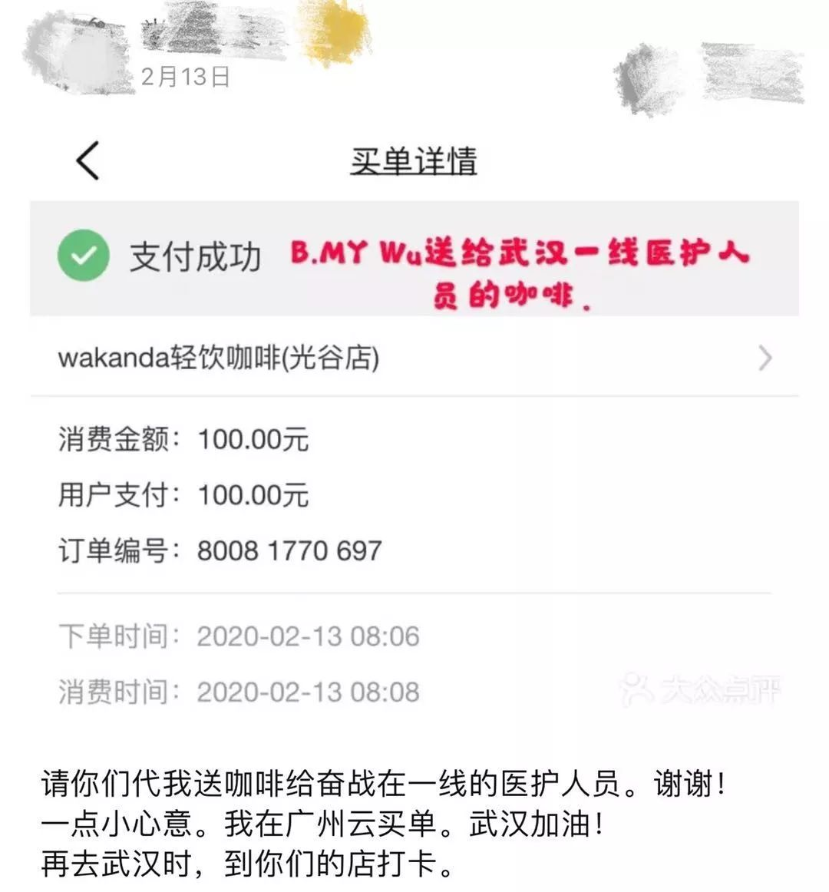
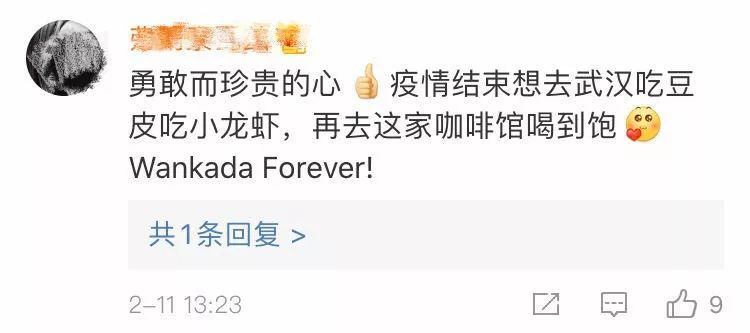

口述实录 | 快递小哥搞定金银潭医护难题：我送的不是快递，是救命的人啊！
原文链接 备份链接 一天接送一个医护人员可以节省4个小时，接送100个就是400小时，400个小时，医护人员能救多少人，怎么算我都是赚的。 口述 | 汪 勇 整理 | 吴 雪 我是个快递员，也是个“组局”的人。 2月13日凌晨5点，我在 …

七双手，两班倒，每天给医生护士送500杯免费咖啡……武汉一家咖啡店最近成了“网红”。总台记者走进这家咖啡店，探访暖心咖啡背后的故事。
 每天分两次给医护人员送咖啡
每天分两次给医护人员送咖啡
这家名叫Wakanda的咖啡店从武汉实行交通管制起，开始为抗“疫”一线的医护人员送免费咖啡，一直坚持到今天。当记者来到咖啡厅时，店里的工作人员正在准备上午的供货。

谈到送咖啡的初衷，咖啡店负责人李飞说，“武汉实行交通管制后，有医护人员来店里买咖啡，和他们聊天后得知现在医院的工作量特别大，医护人员工作非常辛苦。受疫情影响，咖啡店目前无法正常营业，不如做点公益。”
为避免“给医院带来麻烦”，咖啡店每天分两次给医护人员送咖啡，一次在中午就餐时间，另一次在下午医护人员换班的时候。咖啡店把咖啡送到医院的志愿者中转站，再由志愿者用中转车统一送到医护人员手中。

目前店里有7名员工，他们之中既有武汉本地人，也有外地人，还有一名来自伊朗的咖啡师西纳。他们每天从早上9点多开始做准备工作，需要在两三个小时内完成两三百杯咖啡的制作。
西纳：我现在也认为自己是中国人，我会留在这里。和中国人一样，这里现在就是我的家，我会和中国人在一起。

网友实力应援 “云买单”为武汉医护人员买咖啡
近日，网友得知了咖啡店的善举，也纷纷通过手机App进行“云买单”，实力应援这样的爱心举动。据李飞介绍，短短3天内，参与“云买单”的网友就达1万多人。
本来，咖啡店的员工觉得这是件很小的事，但网友的加入令他们感到了肩上承担的分量，决定将这件事当作“一份事业，一种任务”来完成。
为了鼓励辛苦工作的医护人员，擅长美术的店员还在每个咖啡杯上手写“向您致敬”“您最可爱”“感恩有您”等祝福语。有网友参与“云买单”后，店员便将参与者的名字写在每句祝福语的下面，将网友们的爱心和支持一并送给医护人员。

不少网友知道咖啡店的做法后颇受感动，立刻下单“云品尝”咖啡，请医护人员喝咖啡！



还有网友表示，疫情结束，要去咖啡店打卡！


来源：央视新闻综合中国之声


推荐阅读
点击大图 |1晚获73万元打赏，1夜120万人“云蹦迪”，虚拟线上娱乐，真能“蹦”起来？

点击大图 |竟然开始“斗舞”了，说方舱医院是“集中营”的外国黑媒傻了

原文链接 备份链接 一天接送一个医护人员可以节省4个小时，接送100个就是400小时，400个小时，医护人员能救多少人，怎么算我都是赚的。 口述 | 汪 勇 整理 | 吴 雪 我是个快递员，也是个“组局”的人。 2月13日凌晨5点，我在 …
原文链接 备份链接 数字井喷，发生在不到一月之内。 2020年2月13日是一个暴发点。这一天，湖北疫情报告中增加了“临床诊断”分类，新增确诊病例数字飙升，达14840例（含临床诊断病例13332例）。截至2020年2月13日24时，全国累 …
原文链接 备份链接 困难面前，自黑自救 5天内，4个瑞幸咖啡员工要把一台无人咖啡机运进武汉六七二医院。 运送对于封城后的武汉来说，困难重重。小区封锁、物资受阻、通行困难……要在没车、没人的情况下，把一台超过400斤的大家伙运进医院，还要 …
原文链接 备份链接 除了牛奶和饼干，司机的后座上常会捡到医生和护士们留下的礼物，有时候是一罐八宝粥，或者一枚珍贵的N95口罩。 文 | 林秋铭 编辑 | 金匝 1 如果没有这场疫情，今年春节，52岁的李明和他的妻子将会出现在希腊。这是他和 …
原文链接 备份链接 同力协契 共克时艰 武汉“封城”已三周，新冠肺炎全国感染人数还在持续上涨。 所有人都在期待拐点的到来，无数白衣天使依旧坚守在抗击疫情第一线，一刻不敢松懈。社会各界也在通过各种方式参与到这场没有硝烟的抗疫保卫战里。 这 …